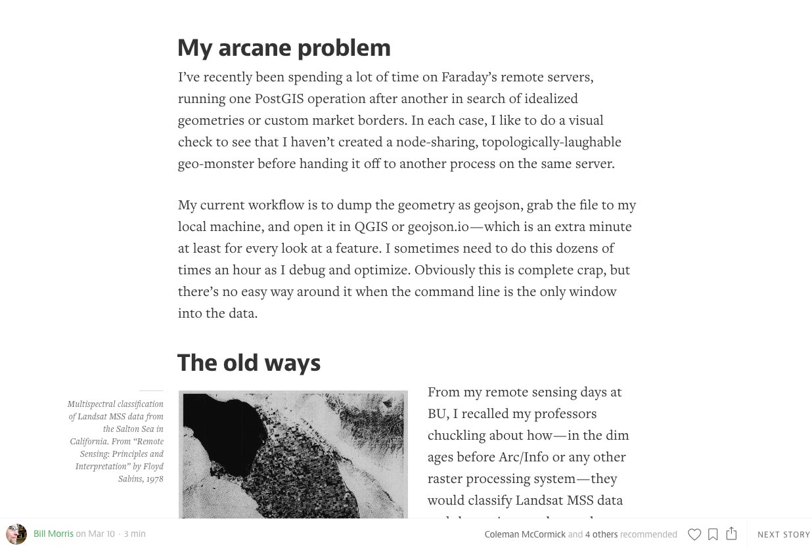

Unsolicited advice for BIG presentations
Tom MacWright
describes Big as "a ridiculous presentation system that works great for creative, hurried people."
If you are not hurried, maybe don't use Big, because you will look hurried, possibly to your detriment, as though you gave no thought to good design.
By the way, that was a TERRIBLE SLIDE.
Long sentences of GIANT TEXT in
lots of colors are very difficult to read.
If you want to be verbose, try one of two things:
1. Write little; talk a lot.
Big is pretty nice for a couple of words, or short sentences.
2. Make a normal web page or something.
If your goal is to share your wordiness with the web, BIG IS TERRIBLE FOR THIS.
The regular ol' web is GREAT FOR THIS.
Oh, did you see there was a background image on that last slide?
If you remove
background-size:100%from your styles in order to accommodate your fun repeating gif,
( )
your carefully cropped screenshot backgrounds may look crazy on desktop computers.
wtf
In conclusion,
Use Big for quick, easy, and short slides.
Paragraph-length giant text is the worst thing in the world.
Look at the
examples Tom provided. They demonstrate effective uses.
Spend time on good design if you can.
Your audience deserves it.